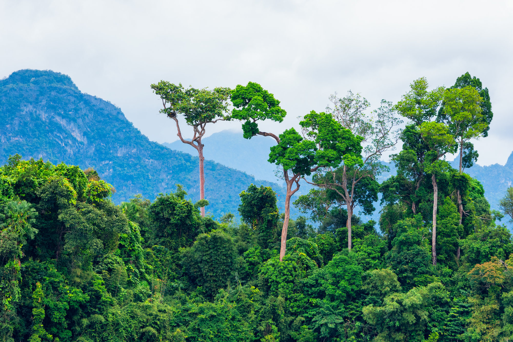
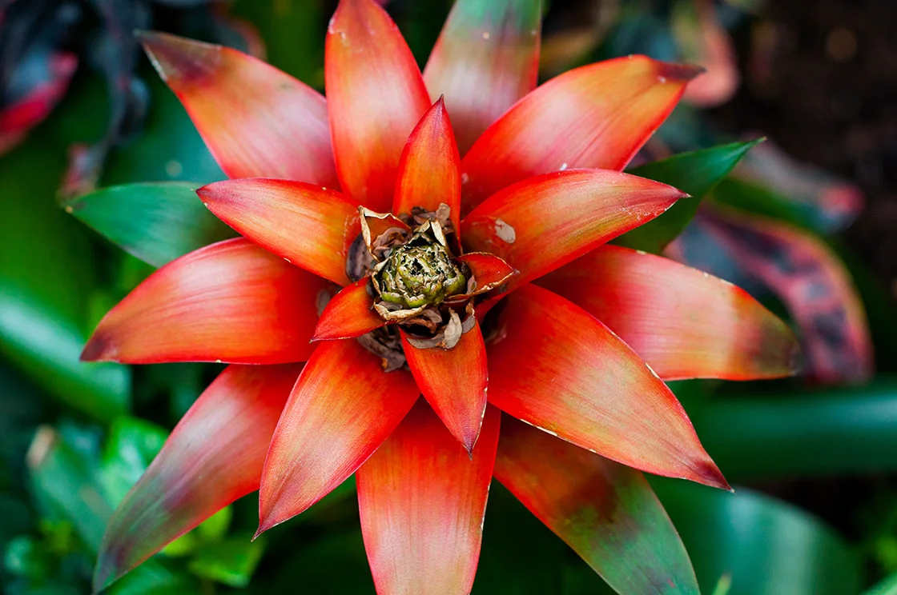
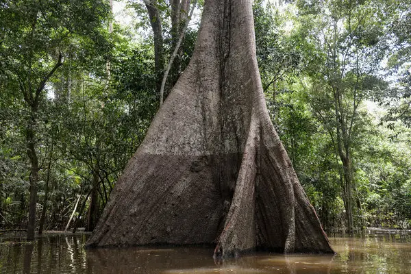
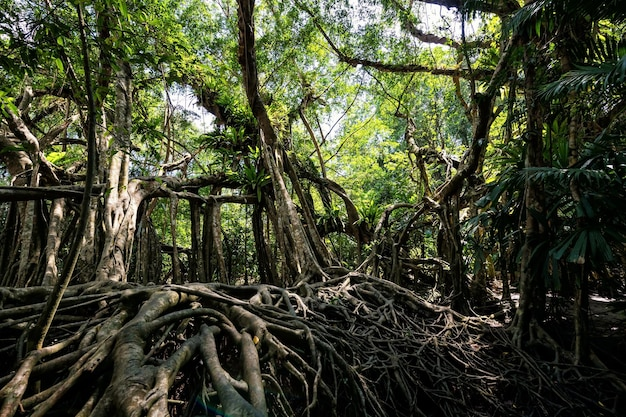

Câți copaci sunt în Amazon?
După cum veți vedea în toate tururile Amazonului din Brazilia, dacă există un lucru care nu lipsește Amazonului, aceia sunt copacii. Deși numărarea fiecărui copac din junglă este imposibilă, oamenii de știință au întreprins mai multe studii și anchete pentru a determina numărul aproximativ de copaci, rezultând în aprx. 400 de miliarde. De fapt, o treime din speciile de copaci din lume se găsesc în Amazon, deși din ce în ce mai multe se pierd în fiecare zi din cauza defrișărilor și tăierilor ilegale.

Care este cel mai înalt copac din Amazon?
Cel mai înalt copac din Amazon este Sumaumeira. O specie a copacului Kapok, Sumaumeira poate crește până la înălțimi de 200m și diametre de peste 3m. Găsit pe câmpiile inundabile ale râurilor junglei, acest copac cu creștere rapidă este ușor de observat în tururile Amazonului datorită rădăcinilor aflate deasupra solului care protejează copacul de apele inundațiilor în timpul sezonului umed. Deși Sumaumeira este cel mai înalt, există sute de alți copaci uriași în Amazon, fiecare falnic la sute de metri deasupra podelei junglei.

Ce plante sunt în pădurea tropicală?
Floare Heliconia (Gheara de homar) Arborele de cauciuc (Hevea brasiliensis) Orhidee. Cacao (Theobroma cacao) Nuferi uriași (Victoria amazonica) Floare de fructul pasiunii (Passiflora) Bromeliade (Bromeliaceae) Viță de vie de perie de maimuță (Combretum rotundifolium).

Cât de repede este defrișată Pădurea Amazoniană din Brazilia?
Brazilienii au distrus porțiuni mari din Amazon, defrișând pământul pentru exploatarea lemnului, pășunat și agricultură. Între 1970 și 2016, întinderea pădurii braziliene din Amazon a scăzut de la aproximativ 1.583.000 de km pătrați la aproximativ 1.283.000 de km pătrați. Cu toate acestea, conservarea a încetinit pierderea pădurilor la aproximativ 0,1–0,2% pe an între 2008 și 2016.

Care este vârsta maximă a unui copac?
Se crede că Sarv-e Abarkuh (Chiparosul Abarkuh) este printre cei mai vechi copaci din lume, deoarece vârsta sa este aproximativă între 4.000 și 5.000 de ani. Este greu să se poziționezi o anumită vârstă pentru copac, deși a fost cultivat de câțiva ani.

Cât de bătrân este în medie un copac?
Vârsta normală a unui copac depinde de soiuri. Palmierii care au o viață scurtă pot trăi până la 40-50 de ani. Salcia poate trăi până la 75 de ani.
